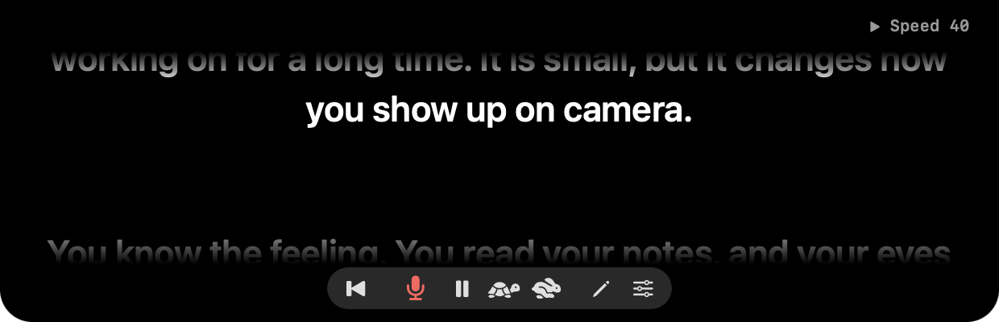
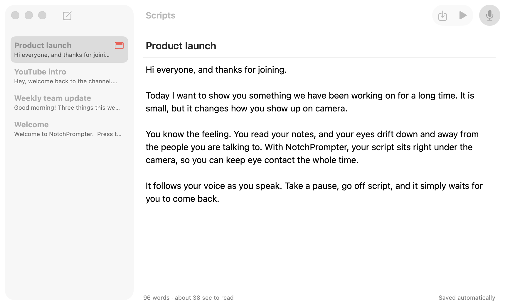

Skipped
Reading from notes?
Your audience notices.
NotchPrompter
Eye contact, built in.
Any language
Pick the language you speak.
Waits when you pause
Take a breath. Your place is kept.
Keeps up when you skip
Leave out a line. It follows along.

Play mode
Hands-free scrolling at your speed.
Built-in script editor
Record yourself

Word
Markdown
RTF
Text
Runs completely on your Mac
No account. No tracking.
Invisible to your audience
On your Mac
What they see
Sharing
NotchPrompter
Teleprompter under your camera
Download on the
Mac App Store
REC
This take was filmed in NotchPrompter.